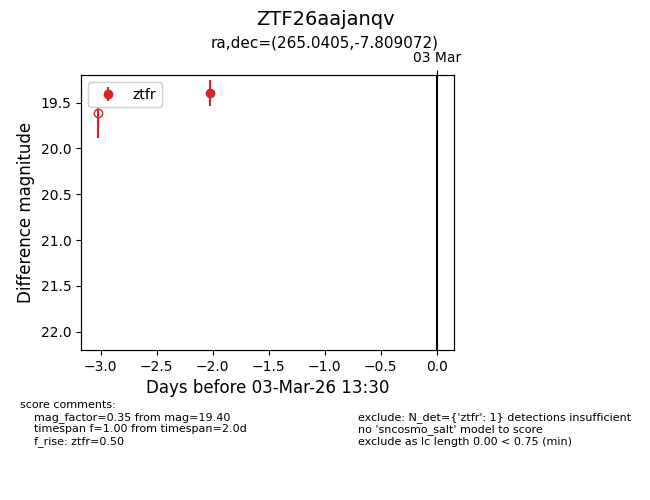
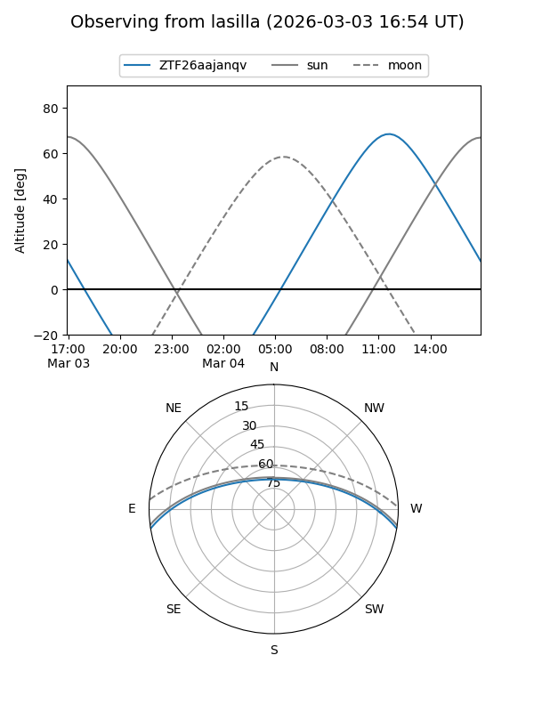
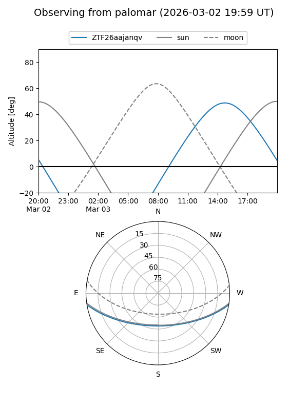

ZTF26aajanqv
Target ZTF26aajanqv at 2026-03-03 13:31
Aliases and brokers:
FINK: link
Lasair: link
ALeRCE: link
alt names
ZTF26aajanqv (ztf,fink_ztf)
Coordinates:
equatorial (ra, dec) = 265.0405,-7.80907
equatorial (HMS+DMS) = 17:40:09.72,-07:48:32.66
galactic (l, b) = (17.5677,+11.99725)
Flags:
Photometry:
last ztfr=19.40
1 ztfr detections
Lightcurve

Visibility


Additional plots